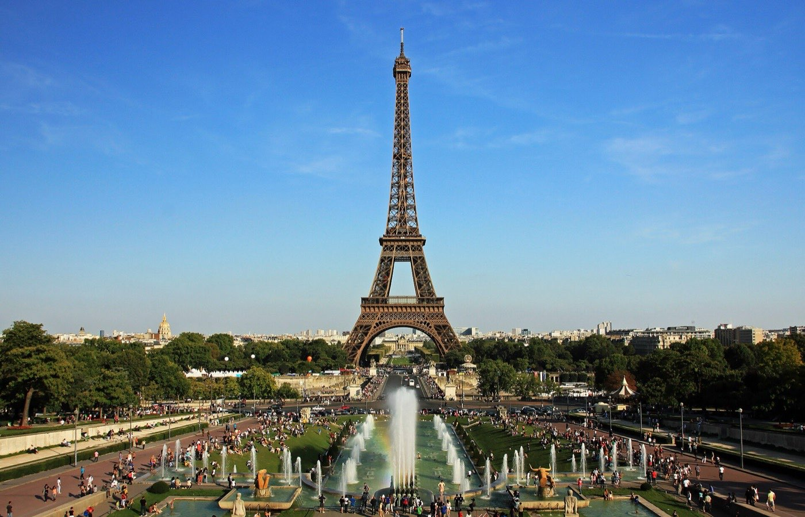
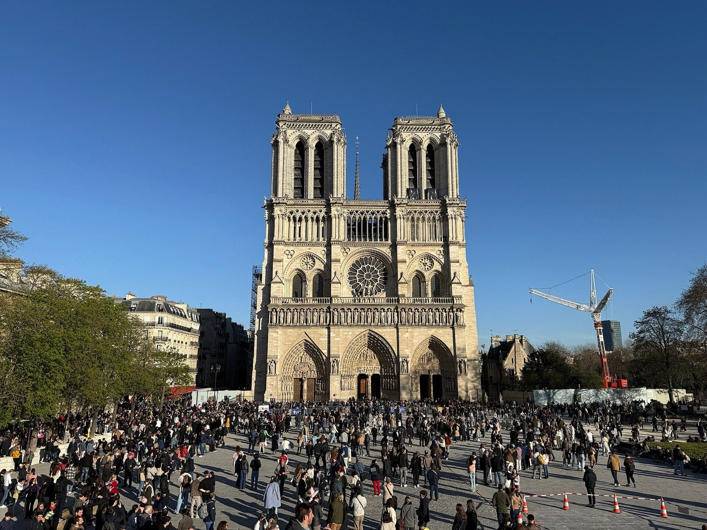
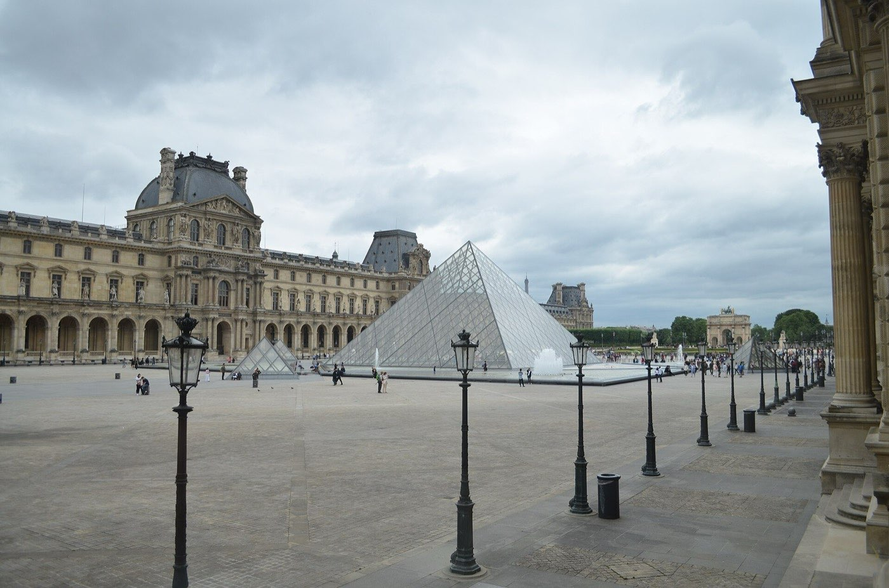
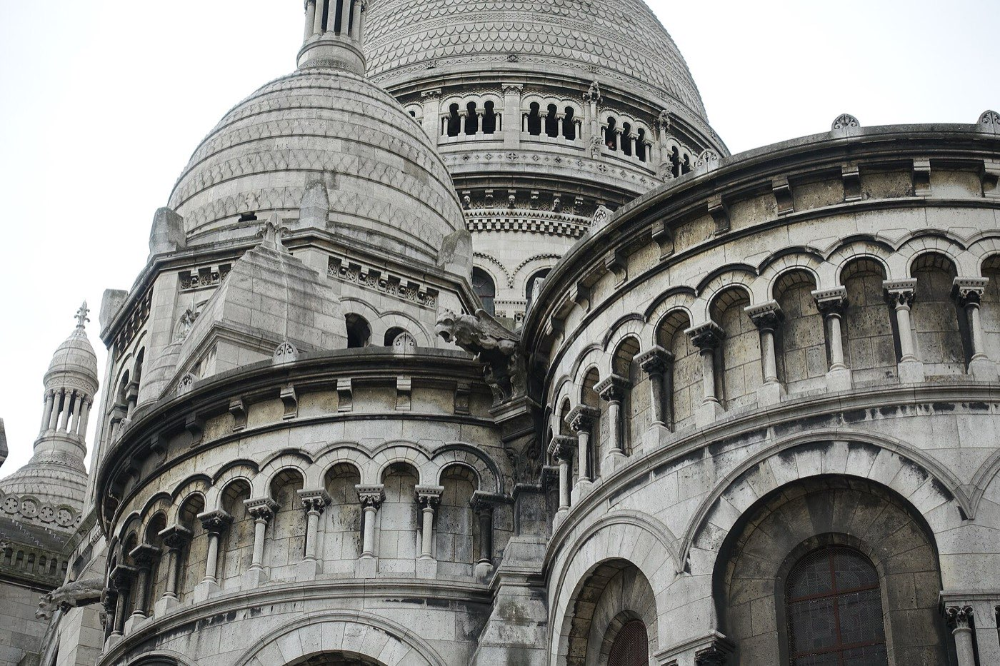

Paris · 3 days
3 Days in Paris: What You Actually Have to See
Three days is enough for Paris's essentials, but the queues have moved online and every booking window is different. Here is what genuinely has to be on the list, and what to reserve before you go anywhere near a plan.

Three days covers Paris's essentials comfortably: the islands and the Latin Quarter, the Louvre and the long walk west to the Eiffel Tower, and Orsay with Montmartre above it. What it does not cover is Versailles, which needs a full day and is the thing most three-day itineraries wrongly try to squeeze in.
The city is compact and the walking is flat, so distance is not what breaks these trips. Booking is. Paris has moved almost every famous queue online, and the windows do not open at the same time as each other. Eiffel Tower lift tickets are released sixty days ahead and go fast. Sainte-Chapelle wants about a week. Notre-Dame will not let you reserve until roughly two days before you walk in. You build the three days backwards from what you actually hold.
Book in this order, and do not skip the last one. Eiffel Tower the moment your dates are fixed, Louvre and Sainte-Chapelle a week or two out, and Notre-Dame from your hotel two mornings before you want to go. Its slots are free and released a couple of days ahead, so there is no way to sort it early and no reason to queue for hours instead.
Day 1 — The islands and the Latin Quarter
Notre-Dame is free again and busier than it has ever been. Entry costs nothing, but it runs on timed slots booked through the cathedral's own site, and those slots appear only about two days in advance. Reserve one and you walk in. Turn up without one in summer and the queue across the parvis can run to two or three hours.
Sainte-Chapelle is five minutes away on the same island and works the opposite way: a paid, compulsory half-hour slot that is worth booking a week out. Go on a bright day if you can choose. The upper chapel is essentially a room made of stained glass, and it is dull under cloud and extraordinary in sun.

The must-sees
Two booked slots on one island, and a free afternoon on the Left Bank once they are done.
Day 2 — The Louvre and the walk west
The Louvre is closed on Tuesdays and there are no exceptions, so this day moves if it has to. It also runs late on Wednesdays and Fridays, and a booked evening slot is the single best way to see it. The galleries at eight in the evening hold a fraction of the people they hold at eleven in the morning.
Skip the Mona Lisa. It is small, behind glass, at the far end of a permanently packed room, and the crowd in front of it is the crowd you came to Paris to avoid. Queuing to photograph it over other people's phones costs an hour that the Denon wing, the Egyptian rooms or the Richelieu sculpture courts would repay several times over.
Afterwards the day is a straight line west and entirely free: through the Tuileries, across Concorde, up the Champs-Élysées to the Arc de Triomphe. Climb the Arc instead of the Eiffel Tower if you only do one. The view from the top has the Eiffel Tower in it, which is the whole point of a view in Paris.

The must-sees
Never a Tuesday. If your middle day is one, swap this with Day 3 and nothing else changes.
Day 3 — Orsay and Montmartre
Orsay closes on Mondays, which is the useful half of a coincidence: the two great museums shut on different days, so whichever one you lose, the other is open. It stays open late on Thursdays. In a converted railway station with the old clock still in place, it is a far easier building to spend three hours in than the Louvre.
Then go up the hill. Montmartre is the one part of this itinerary that needs no reservation of any kind, and the walk up through the streets behind the funicular is better than the funicular. Sacré-Cœur is free, and the terrace in front of it faces south over the whole city.

The must-sees
Museum first, hill second. Nothing after lunch on this day needs a ticket.
The booking calendar
| What | When it opens | If you do not book |
|---|---|---|
| Eiffel Tower, lift | 60 days ahead, midnight Paris time | Sold out in peak season. Stairs, or the view from below |
| Eiffel Tower, stairs | 40 days ahead | A shorter on-the-day queue, and cheaper anyway |
| The Louvre | Weeks ahead | The queue everyone warns you about, and it is real |
| Sainte-Chapelle | About a week ahead | A compulsory slot you may not get on the day |
| Notre-Dame | Only about 2 days ahead | Two to three hours on the parvis at peak times |
| Arc de Triomphe, Panthéon | Same day is usually fine | Rarely a problem outside August |
Closed days and late nights
| Where | Closed | Open late |
|---|---|---|
| The Louvre | Tuesdays | Wednesday and Friday, until 21:00 |
| Musée d'Orsay | Mondays | Thursday, until 21:45 |
| Notre-Dame | Open daily | Thursday, until 22:00 |
| Versailles | Mondays | Gardens open daily, palace not |
What three days does not cover
Cutting deliberately beats rushing. These need more time than you have:
- Versailles — a full day including the train, and closed on Mondays. Save it for a longer trip.
- Le Marais — the best walking in Paris and the one real casualty of a three-day plan.
- The Catacombs — timed, ticketed, and an hour underground that has to displace something above it.
- Père Lachaise — enormous, and a half day once you start looking for anyone in particular.
- A second museum on any day — the Louvre and Orsay are each a morning's work, and stacking them is how people stop enjoying art.
Common questions about 3 days in Paris
Is 3 days enough for Paris?
For the city itself, yes. Three days covers the islands and the Latin Quarter, the Louvre and the walk west to the Eiffel Tower, and Orsay with Montmartre. It is not enough to add Versailles, which needs a full day of its own and is closed on Mondays.
What do you need to book in advance in Paris?
The Eiffel Tower first, because lift tickets are released sixty days ahead and sell out quickly in summer. Then the Louvre and Sainte-Chapelle, a week or two out. Notre-Dame is the exception: its free slots only appear about two days before, so book that one once you have arrived.
Is Notre-Dame open again, and do you need a ticket?
It is open and entry is free. There are no tickets sold, but you should reserve a free timed slot through the cathedral's official site, which releases them roughly two days ahead. Without one you join a queue that can run two to three hours at busy times.
What day is the Louvre closed?
Tuesdays, every week, without exception. The Musée d'Orsay closes on Mondays instead, so the two never overlap and there is always one of them open. The Louvre also stays open until 21:00 on Wednesdays and Fridays, which is the quietest time to go.
Is the Mona Lisa worth seeing?
Not at the price it costs you. The painting is small, behind glass and at the end of a permanently crowded room, and the queue to stand in front of it takes an hour you could spend almost anywhere else in the building. Walk past it and spend the time in the Denon wing or the Egyptian collection.
Is the Paris Museum Pass worth it?
Only if you are visiting four or five paid sites, which is a lot for three days. It also is not accepted at the Eiffel Tower, the single most expensive thing most people book. On a short trip, buying two or three entries directly usually costs less.
Eiffel Tower or Arc de Triomphe for the view?
The Arc de Triomphe, if you are only doing one. It is cheaper, the queue is shorter, and the view from the roof contains the Eiffel Tower, which the view from the Eiffel Tower cannot. Go up the tower for the tower itself, not for the panorama.
Tailored to your trip
Travelling to Paris? Plan your trip around your real arrival and departure times.
Download iOS App